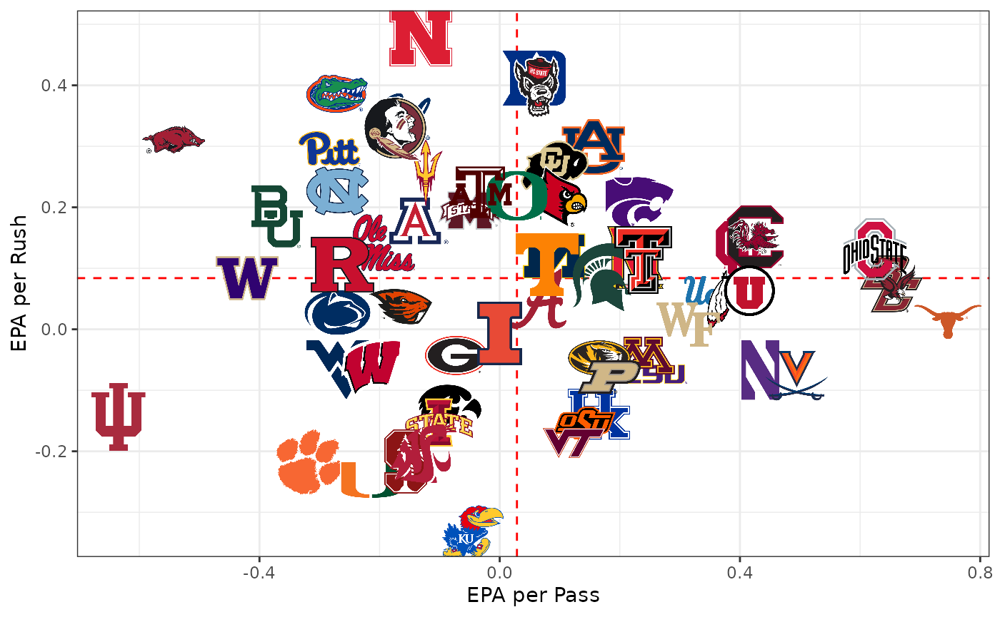
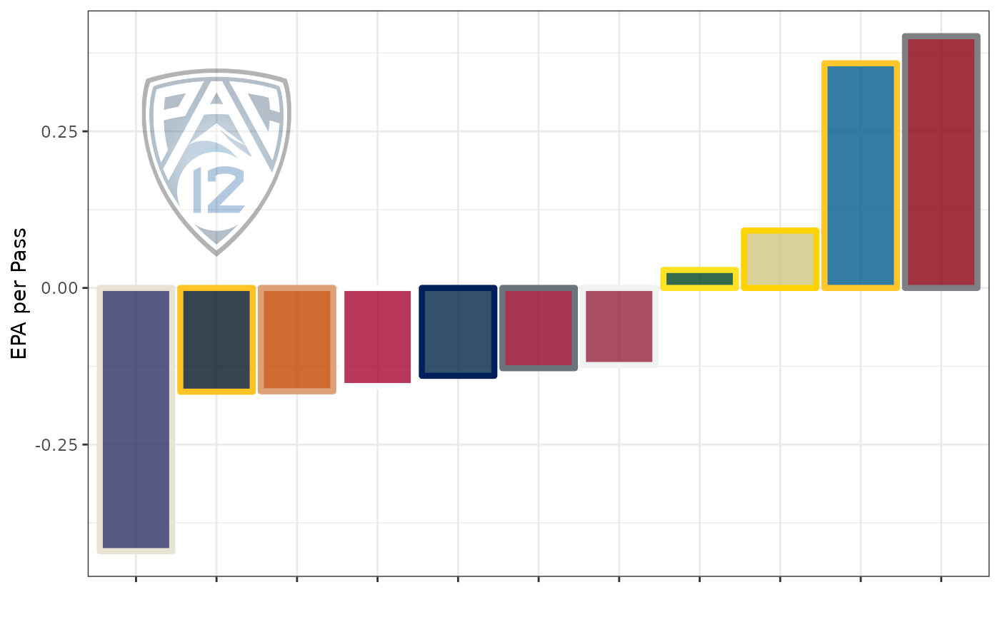
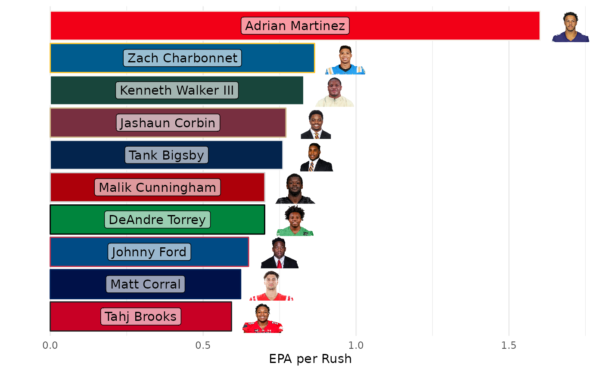

This is a quick tutorial on how to use cfbplotR to quickly and easily include college football team logos in your ggplot.
Load and Process Data
First we need to load the necessary libraries. cfbfastR will get us the data we want to use for analysis. cfbplotR will help us easily plot the results. tidyverse will help us do the necessary data manipulation and of course includes ggplot2 that we will use for plotting. You can use the commented out code to install these packages if you don’t already have them.
#remotes::install_github(repo = "sportsdataverse/cfbfastR")
#remotes::install_github(repo = "Kazink36/cfbplotR")
#install.packages(tidyverse)
library(cfbfastR)
library(cfbplotR)
library(dplyr, warn.conflicts = FALSE)
library(ggplot2)
library(tidyr)
library(forcats)This first chunk of code will pull the play-by-play data from the first week of the 2021 season using the cfbfastR data repo and create the advanced metrics like EPA that we will be plotting (this will take a second). We’ll also pull in the general team info so we can filter down to just teams in a power 5 conference.
pbp <- cfbfastR::load_cfb_pbp(2021) %>%
filter(week == 1)
team_info <- cfbfastR::cfbd_team_info()
team_info <- team_info %>%
select(team = school,conference,mascot) %>%
filter(conference %in% c("Pac-12","ACC","SEC","Big Ten","Big 12"))Now we quickly roll up the EPA data and find the EPA per rush and EPA per pass for every team in week 1 and take a look at our plotting data.
team_plot_data <- pbp %>%
group_by(team = offense_play) %>%
summarize(rush_epa = mean(if_else(rush == 1,EPA,NA_real_),na.rm = TRUE),
n_rush = sum(rush),
pass_epa = mean(if_else(pass == 1,EPA,NA_real_),na.rm = TRUE),
n_pass = sum(pass)) %>%
filter(team %in% team_info$team) %>%
left_join(team_info,by = "team")
head(team_plot_data)## # A tibble: 6 × 7
## team rush_epa n_rush pass_epa n_pass conference mascot
## <chr> <dbl> <dbl> <dbl> <dbl> <chr> <chr>
## 1 Alabama 0.0502 105 0.0589 131 SEC Crimson Tide
## 2 Arizona 0.178 31 -0.140 53 Pac-12 Wildcats
## 3 Arizona State 0.256 65 -0.123 46 Pac-12 Sun Devils
## 4 Arkansas 0.311 93 -0.543 48 SEC Razorbacks
## 5 Auburn 0.299 63 0.156 65 SEC Tigers
## 6 Baylor 0.185 86 -0.372 41 Big 12 BearsPlotting with cfbplotR
Now that the data is prepped, we can being to use cfbplotR. First we’ll plot all the teams with Passing EPA on the x-axis and Rushing EPA on the y-axis with lines showing the median value for each. It’s important to set width or height in geom_cfb_logos to small values. The default of 1 will create extremely large logos.
ggplot(team_plot_data, aes(x = pass_epa, y = rush_epa)) +
geom_median_lines(aes(v_var = pass_epa, h_var = rush_epa)) +
geom_cfb_logos(aes(team = team), width = 0.075) +
labs(x = "EPA per Pass",y = "EPA per Rush") +
theme_bw()
This is still pretty messy because of the large number of teams. Let’s try to focus in on the Pac-12 teams with a couple of handy tools. We’re going to add two columns to our data: one for the color and one for the alpha. Then we just add those two columns as aesthetics to geom_cfb_logos to turn the logos of non-Pac-12 teams black and white and lower the alpha.
team_plot_data %>%
mutate(color = if_else(conference == "Pac-12",NA_character_,"b/w"),
alpha = if_else(conference == "Pac-12",1,.6)) %>%
ggplot(aes(x = pass_epa, y = rush_epa)) +
geom_median_lines(aes(v_var = pass_epa, h_var = rush_epa)) +
geom_cfb_logos(aes(team = team, alpha = alpha, color = color), width = 0.075) +
scale_alpha_identity() +
scale_color_identity() +
labs(x = "EPA per Pass",y = "EPA per Rush") +
theme_bw()Finally let’s make a bar chart showing the Pac-12 EPA per pass for each team. Because cfbplotR creates a custom geom for ggplot, we can use annotate() to place a log anywhere we’d like. scale_color_cfb() and scale_fill_cfb() let us automatically use a teams primary color on a plot. The alt_colors argument lets us pass through a vector of team names that we want to use an alternate color for. sacle_x_cfb() and scale_y_cfb() change the axis labels that are team names into logos. Due to the way ggplot works, you have to add the corresponding theme function theme_x_cfb() or theme_y_cfb().element_cfb_logo() and element_cfb_headshot() can be used for the axis.text argument in the theme function for improved performance in using logos and headshots as axis labels.
team_plot_data %>%
filter(conference == "Pac-12") %>%
mutate(team = fct_reorder(team,pass_epa)) %>%
ggplot(aes(x = team, y = pass_epa)) +
#
geom_col(aes(fill = team, color = team),size = 1.5) +
annotate(cfbplotR::GeomCFBlogo,x = "California",y = 0.2,team = "Pac-12",height = .35,alpha = .3) +
scale_fill_cfb(alpha = .8) +
scale_color_cfb(alt_colors = team_plot_data$team) +
#scale_x_cfb(size = 18) +
labs(x = "", y = "EPA per Pass") +
theme_bw() +
#theme_x_cfb()
theme(axis.text.x = element_cfb_logo())
cfbplotR also allows you to plot player headshots. Let’s look at the top 10 rushing EPA players with more than 10 rushes for week 1.
player_plot_data <- pbp %>%
filter(!is.na(rush_player_id)) %>%
group_by(rush_player_id) %>%
summarize(epa = mean(EPA, na.rm = TRUE),
player_name = first(rusher_player_name),
team = first(pos_team),
n = n()) %>%
filter(n >= 10) %>%
arrange(desc(epa)) %>%
slice(1:10)
player_plot_data %>%
mutate(team_ordered = fct_reorder(team,epa)) %>%
ggplot(aes(y = team_ordered, x = epa)) +
geom_col(aes(color = team, fill = team)) +
geom_label(aes(label = player_name, x = epa / 2), alpha = .6) +
geom_cfb_headshots(aes(player_id = rush_player_id, x = epa + .1), height = .1) +
scale_color_cfb(alt_colors = valid_team_names()) +
scale_fill_cfb() +
labs(y = "", x = "EPA per Rush") +
#scale_y_cfb(size = 18) +
theme_minimal() +
theme(legend.position = "none",
panel.grid.major.y = element_blank()) +
#theme_y_cfb()
theme(axis.text.y = element_cfb_logo())
Tables with cfbplotR
The gt package offers an easy way to create nice tables of data and the gtExtras package from Tom Mock provides a number of convenient functions for styling those tables. The gt_fmt_cfb_logo() and gt_fmt_cfb_wordmark() functions are slightly modified versions of gtExtras::gt_image_rows() to easily add team and conference logos or wordmarks based on names from valid_team_names(). The gt_merge_stack_team_color() function is a slightly modified version of gtExtras::gt_merge_stack() that merges two columns together and colors the text of the bottom row with the color of the team referenced in a third column. We can quickly make a table showing the top teams from week 1 by EPA per pass.
library(gt)
team_plot_data %>%
transmute(conference, team,logo = team, mascot, wordmark = team,
pass_epa = round(pass_epa,2),n_pass,
rush_epa = round(rush_epa,2),n_rush) %>%
arrange(desc(pass_epa)) %>%
head(8) %>%
gt() %>%
gt_fmt_cfb_logo(columns = c(conference,logo)) %>%
gt_fmt_cfb_wordmark(columns = wordmark) %>%
gt_merge_stack_team_color(team,mascot,team)| conference | team | logo | wordmark | pass_epa | n_pass | rush_epa | n_rush |
|---|---|---|---|---|---|---|---|
 |
Texas
Longhorns
|
 |
0.72 | 29 | 0.01 | 39 | |
 |
Boston College
Eagles
|
 |
 |
0.65 | 30 | 0.07 | 35 |
 |
Ohio State
Buckeyes
|
 |
 |
0.62 | 69 | 0.13 | 46 |
|
Virginia
Cavaliers
|
 |
 |
0.49 | 32 | -0.08 | 31 |
 |
South Carolina
Gamecocks
|
 |
0.42 | 45 | 0.15 | 94 | |
|
Oklahoma
Sooners
|
 |
0.40 | 68 | 0.13 | 77 | |
 |
Utah
Utes
|
 |
 |
0.40 | 55 | -0.06 | 73 |
|
UCLA
Bruins
|
 |
0.36 | 43 | 0.06 | 85 |
We can also use the gt_fmt_cfb_headshot() function to add headshots to a gt using the player_id or headshot_url available through cfbfastR.
player_plot_data %>%
separate(player_name, into = c("first","last"), extra = "merge") %>%
select(team,rush_player_id,first,last,n,epa) %>%
gt() %>%
gt_fmt_cfb_logo(team) %>%
gt_fmt_cfb_headshot(rush_player_id) %>%
gt_merge_stack_team_color(first,last,team)| team | rush_player_id | first | n | epa |
|---|---|---|---|---|
 |
 |
Adrian
Martinez
|
15 | 1.6017047 |
|
 |
Zach
Charbonnet
|
17 | 0.8643612 |
 |
 |
Kenneth
Walker III
|
23 | 0.8290600 |
 |
 |
Jashaun
Corbin
|
15 | 0.7706696 |
 |
 |
Tank
Bigsby
|
16 | 0.7607350 |
 |
 |
Malik
Cunningham
|
16 | 0.7015135 |
 |
 |
DeAndre
Torrey
|
24 | 0.7010476 |
 |
 |
Matt
Corral
|
10 | 0.6226238 |
 |
 |
Tahj
Brooks
|
13 | 0.5926412 |
 |
 |
Abram
Smith
|
19 | 0.5819387 |